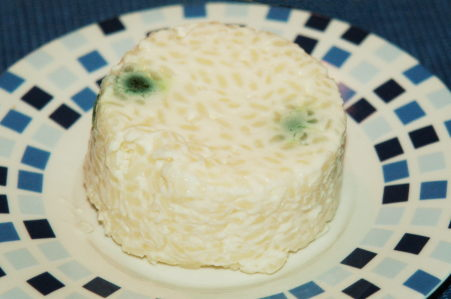

| Zutaten: | |
| 9 dl | Milch |
| 1/2 TL | Salz |
| 60 g | Zucker |
| 1/2 TL | Vanillezucker |
| 150 g | Reis |
| 50g | Sultaninen oder kandierte Cakefrüchte |
| Sirup | |
| Beeren oder Kompott | |
| 1 | Gugelhopfform 1 l |
Zutaten bereitstellen
Milch, Salz, Zucker und Vanillezucker aufkochen. Reis zufügen, auf kleiner Hitze ca. 30 Minuten zu Brei kochen, öfters umrühren.
Sultaninen oder Cakefrüchte darunter mischen.
Form kalt ausspülen,
Brei einfüllen, 2 - 3 Stunden kaltstellen, stürzen.
Mit Sirup, Beeren oder Kompott servieren.
Herbert Eigenmann, Code: RSK
Schmeckte am 12.3.2004 sehr gut. Ich habe das Rezept etwas abgewandelt: Ich nahm kandierte Kirschen statt Rosinen. In Ermangelung einer Gugelhopf-Form nahm ich kleine Förmchen die gerade schöne Portionen ergaben. Als Sauce servierte ich Ahornsirup.
Für die Lebensmittelingenieurinnen die dieses Rezept anschauen: Das grüne Geschludder im Bild ist nicht etwa Schimmel! Es sind die mit grüner Lebensmittelfarbe eingefärbten kandierten Kirschen welche so unappetitlich durchschimmern.
Das schönere Bild ist auf dem Milchreisköpfli-Rezept
Milch aufkochen ist ein risikoreiches Unterfangen und gibt eine Sauerei wenn sie Überkocht!
@LINKBACK_TAG@ @WAKELOCK@